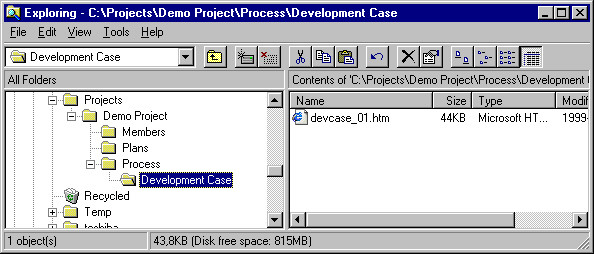

Toolkit:
Creating a Development Case Using the Rational Unified Process
Purpose
This Toolkit page describes how to create a Development Case in HTML format.
Related information:
Creating a Development Case
A Web-based Development Case is typically one or more pages within the context
of a project or organization Web. Browse the example
organization webs to see sample Web-based Development Cases. If you created
your project or organization Web by copying an example Web site, then you need
only modify the copied Development Case Web pages. See Toolkit:
Working with Project Webs.
Alternatively, to create a Development Case within an existing Web site:
- Create a folder for the Development Case. The development case should be
placed at a server in an intranet so all project members can easily access
it. Normally, the development case should be placed within the folder where
most of the project's files are stored.
- Locate the Development Case template (wb_dvlcs.htm)
inside the RUP. The file path is typically: C:/Program
Files/Rational/RationalUnifiedProcess/webtmpl/templates/environ
- Copy the Development Case template to the appropriate place in the
project's folder.
- Rename the file.

A development case is part of a project.
Copyright
© 1987 - 2001 Rational Software Corporation
|  Process Engineer Toolkit >
Process Engineer Toolkit >
 Creating a Development Case
Creating a Development Case